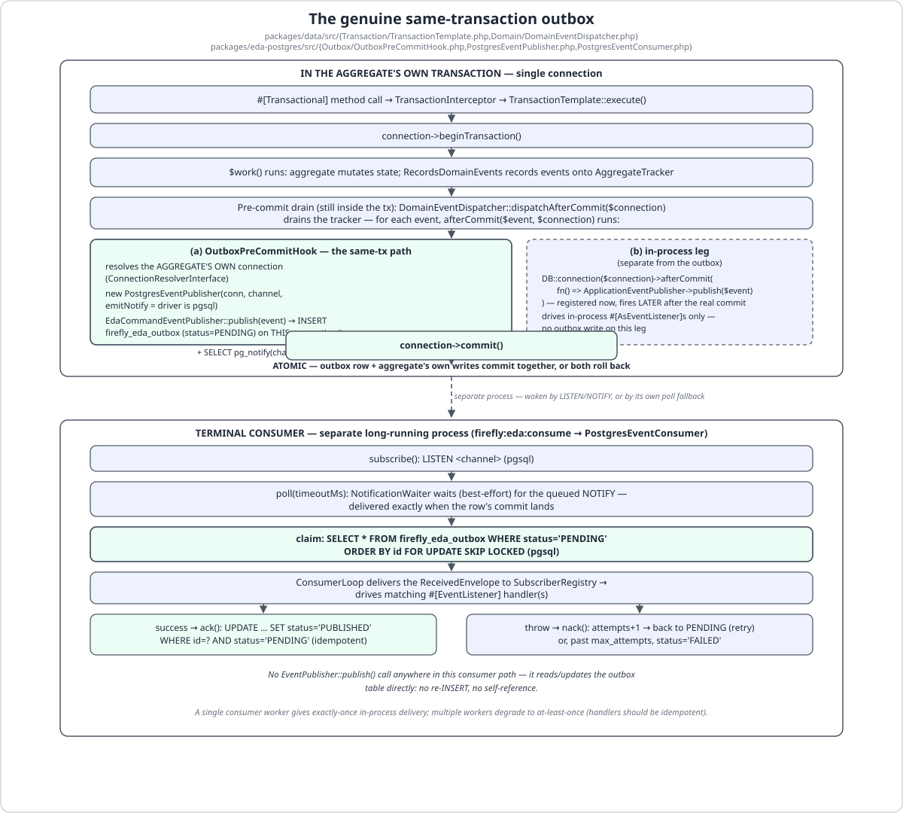

EDA Brokers (SP-4)¶
firefly/eda-rabbitmq, firefly/eda-postgres, and firefly/eda-kafka are real message-broker
adapters behind the firefly/eda (M9) EventPublisher port — the "real brokers" seam M9 deliberately
left for later (see Event-Driven Architecture § Known-latent). Each is its own
opt-in package, gated behind firefly.eda.provider, and each ships its own HealthIndicator. Installing
any of them without selecting it as the active provider is fully inert: no connection is opened, no
extension is required, and /actuator/health is unaffected.
This page assumes you have already read Event-Driven Architecture — the EventPublisher port,
EventEnvelope, #[EventListener], and the retry/DLQ model it describes are unchanged here. What's new
in SP-4 is (1) three adapters that put envelopes on a real wire instead of in-memory/queue, and (2) a
consumer-loop SPI in firefly/eda itself, because a real broker needs a long-running process to pull
messages back off the wire — something M9's start()/stop() never needed.
The three adapters¶
| Package | Client library | Destination shape | DLQ | Health indicator name |
|---|---|---|---|---|
firefly/eda-rabbitmq |
php-amqplib/php-amqplib (AMQP 0-9-1) |
"exchange/routingKey" (or a bare routing key against the default exchange) |
Broker-native DLX (dead-letter exchange) | rabbitmq |
firefly/eda-postgres |
ext-pdo_pgsql (via Laravel's ConnectionInterface) |
a destination string stored on the outbox row | Outbox row status='FAILED' |
postgres |
firefly/eda-kafka |
ext-rdkafka (OPTIONAL) |
a topic name | Dead-letter topic <topic>.DLT |
kafka |
All three implement the same EventPublisher::publish(string $destination, string $eventType, array
$payload, array $headers = []): void signature firefly/eda defines, and all three ship an
EventConsumer (see The consumer-loop SPI below) with the identical
subscribe(array)/start()/poll(int):?ReceivedEnvelope/ack(ReceivedEnvelope)/nack(ReceivedEnvelope,
bool)/stop() shape.
The firefly.eda.provider switch¶
firefly.eda.provider now has five values: memory (default) and queue bind the M9 in-process/queue
adapters (EdaAutoConfiguration, #[Order(1000)]); rabbitmq, postgres, and kafka each bind their own
EventPublisher + EventConsumer pair from #[Order(900)] autoconfigurations (RabbitMqAutoConfiguration,
PostgresOutboxAutoConfiguration, KafkaAutoConfiguration) — running before EdaAutoConfiguration's
#[ConditionalOnMissingBean(EventPublisher::class)] so it backs off correctly (the
firefly/scheduling-postgres win-the-race precedent). Each broker's beans are additionally
#[ConditionalOnProperty(name: 'firefly.eda.provider', havingValue: '<broker>')]-gated, so with any other
provider selected the whole package resolves nothing and requires nothing.
Config keys¶
RabbitMQ (firefly/eda-rabbitmq)¶
| Key | Default | Meaning |
|---|---|---|
firefly.eda.rabbitmq.host |
127.0.0.1 |
AMQP host. |
firefly.eda.rabbitmq.port |
5672 |
AMQP port. |
firefly.eda.rabbitmq.user |
guest |
AMQP user. |
firefly.eda.rabbitmq.password |
guest |
AMQP password. |
firefly.eda.rabbitmq.vhost |
/ |
AMQP vhost. |
firefly.eda.rabbitmq.exchange |
firefly.events |
The default topic exchange publish() declares/targets when a destination carries no exchange/ prefix. |
firefly.eda.rabbitmq.queue |
firefly.eda |
The durable work queue the consumer declares and binds every subscribed pattern to. |
firefly.eda.rabbitmq.dlx |
firefly.events.dlx |
The dead-letter topic exchange the work queue's x-dead-letter-exchange argument points at. |
firefly.eda.rabbitmq.prefetch |
10 |
basic_qos prefetch count for the consumer. |
Postgres (firefly/eda-postgres)¶
| Key | Default | Meaning |
|---|---|---|
firefly.eda.postgres.connection |
the default DB connection | The named Laravel connection the outbox publisher/consumer/relay use — must be pgsql for pg_notify/LISTEN to activate (any other driver, e.g. sqlite in tests, silently skips the NOTIFY optimization and falls back to polling). |
firefly.eda.postgres.channel |
firefly_eda_events |
The LISTEN/NOTIFY channel name and the outbox row's channel column value. |
firefly.eda.postgres.max_attempts |
3 |
How many nack()s (in-process consumer) or failed relay attempts an outbox row tolerates before it is marked FAILED. |
firefly.eda.postgres.relay.downstream_provider |
(unset) | OPTIONAL. Selects the relay's downstream: the shipped aliases rabbitmq|kafka, the class-string of any EventPublisher, or a bound container id. When set, firefly:outbox:relay forwards PENDING rows there; when unset the command refuses to run with an error naming this key, and delivery is entirely the terminal in-process consumer's job. An app that binds its own publisher under the container id firefly.eda.relay.downstream may leave this key unset — that binding is checked first. Resolution is validated when the relay command runs (not at boot), so a misconfiguration fails before a single row is claimed instead of at the first publish. Whatever it resolves to, a PostgresEventPublisher is refused: it would re-insert PENDING rows into the same outbox. |
Kafka (firefly/eda-kafka)¶
| Key | Default | Meaning |
|---|---|---|
firefly.eda.kafka.brokers |
127.0.0.1:9092 |
metadata.broker.list for both the producer and the consumer. |
firefly.eda.consumer.group_id |
firefly |
The Kafka consumer group id (group.id). Namespaced under the broker-agnostic firefly.eda.consumer.* prefix rather than firefly.eda.kafka.* because a consumer group id is a Kafka-specific concept with no RabbitMQ/Postgres analog — it is read only by KafkaAutoConfiguration. |
Tracing on the wire (all three)¶
| Key | Default | Meaning |
|---|---|---|
firefly.eda.tracing.brokers.enabled |
true |
Whether RabbitMqEventPublisher, KafkaEventPublisher and PostgresEventPublisher may stamp a traceparent on the envelope they hand to the transport. |
All three publish() methods run inside EdaTracing::tracePublish(), so the message that reaches the
exchange, the topic or the firefly_eda_outbox row carries the producer span's traceparent and the consumer
on the far side continues the trace rather than starting a new one. On Postgres that covers both writers of
a row: the EventPublisher bean and OutboxPreCommitHook, which is the only path a DomainEvent takes under
provider=postgres — so the traced row is the one that commits with the aggregate. firefly:outbox:relay
wraps its forward in traceConsume() of the claimed row, so the downstream producer span is a child of the
trace the row carries instead of a fresh root.
It does nothing unless firefly.observability.tracing.enabled and firefly.observability.tracing.eda.enabled
are on (with them off the bound EdaTracing is the no-op). Set it to false to keep in-process spans while
refusing to put trace identifiers on a wire someone else reads. The key is read in exactly one place —
Firefly\Eda\Tracing\BrokerTracing — by the three publisher beans and by RelayDownstream, because a gate
that lives only in a bean fails open wherever a publisher is built by container autowiring. The relay honours it
whether you name a shipped adapter by its alias (rabbitmq) or by its own class-string: both spellings take the
same configured path. A downstream of your OWN — a publisher class this package ships no adapter for, or one you
bind under firefly.eda.relay.downstream — is yours to construct and therefore yours to gate; call
BrokerTracing::resolve() where you build it.
No config key activates a broker by itself
Installing firefly/eda-postgres (say) via Composer does nothing until firefly.eda.provider=postgres
is set. Conversely, setting the provider without installing the matching package throws at boot (eda's
own #[ConditionalOnMissingBean] default binds nothing useful, or — for Kafka specifically — a clear
RuntimeException if ext-rdkafka is absent; see The Kafka extension is OPTIONAL).
The genuine same-transaction outbox (firefly/eda-postgres)¶
M9 shipped only at-least-once delivery within a process/queue — publishing a domain event was never
atomic with the aggregate's own database write. firefly/eda-postgres closes that gap with a genuine
same-transaction outbox: the firefly_eda_outbox row is written inside the aggregate's own open
transaction, on the aggregate's own connection, so it commits or rolls back atomically with the aggregate
— no dual-write, no "commit then hope the publish succeeds."

The seam: PreCommitEventHook¶
firefly/data's Domain\DomainEventDispatcher (non-frozen — this is the one authorized non-Version.php
edit SP-4 makes) gained an optional constructor seam:
interface PreCommitEventHook
{
public function handle(object $event, ?string $connection = null): void;
}
DomainEventDispatcher::afterCommit() — which already runs during the pre-commit drain, before
DB::connection($connection)->afterCommit(...) is even registered — now calls
$this->preCommitHook?->handle($event, $connection) first. The hook is null by default: with no
broker package installed (or any provider other than postgres), DomainEventDispatcher behaves exactly
as it did in M8 — publish deferred to DB::afterCommit only, zero behaviour change. $connection is
threaded through unchanged from the dispatcher, so a #[Transactional(connection: 'x')] aggregate's
outbox row lands on connection x, not some default connection.
firefly/eda-postgres's OutboxPreCommitHook is the implementation: it resolves the aggregate's own
connection via the injected ConnectionResolverInterface, builds a PostgresEventPublisher on it, and
delegates to an EdaCommandEventPublisher (the same M10 mapping HandlerManifest::destinations() +
CorrelationContext uses for the after-commit bridge) — so the domain-event → envelope mapping
(event type, payload, per-event destination, transaction_id) is byte-for-byte identical between the
in-tx path and the ordinary after-commit path. Only non-DomainEvent objects are ignored by the hook (the
generic ApplicationEventPublisher after-commit dispatch still handles those).
The INSERT + pg_notify¶
PostgresEventPublisher::publish() does one INSERT ... RETURNING id into firefly_eda_outbox on
whatever connection it was constructed with — inside a transaction, that INSERT enlists in it. When
the underlying driver is pgsql, the publisher also issues SELECT pg_notify(?, ?) with the row id, in
the same transaction. Postgres queues a NOTIFY fired inside a transaction and only delivers it once
that transaction actually commits — so the consumer's LISTEN wakes with low latency at exactly the
moment the row becomes visible to other connections, and never wakes for a row that gets rolled back.
Outbox columns (one source of truth, OutboxSchema): id, destination, channel, event_type, payload,
headers, transaction_id, status, attempts, error_message, created_at, processed_at, failed_at. status
is one of PENDING (just written) / PUBLISHED (delivered) / FAILED (exhausted max_attempts).
Double-publish avoidance¶
With provider=postgres, both the in-tx OutboxPreCommitHook and the ordinary M10 after-commit bridge
(DomainEventBridge → CommandEventPublisher → EdaCommandEventPublisher) could in principle write the
same event to the outbox twice. PostgresOutboxAutoConfiguration prevents this by binding, all at
#[Order(900)] (ahead of firefly/data's and firefly/cqrs's #[Order(1000)] defaults):
- its own
DomainEventDispatchercarrying theOutboxPreCommitHook(winsDataAutoConfiguration's#[ConditionalOnMissingBean(DomainEventDispatcher::class)]), and - a
NoOpEventPublisheras theCommandEventPublisher(winsCqrsAutoConfiguration's#[ConditionalOnMissingBean(CommandEventPublisher::class)]), silencing only the after-commit eda leg.
The result: a domain event is written to the outbox exactly once — in-tx, atomically with the
aggregate. The generic (non-eda) after-commit ApplicationEventPublisher dispatch is untouched, so
#[AsEventListener] in-process listeners keep working exactly as before.
Two forward paths¶
Once a row is PENDING in the outbox, there are two distinct — and independent — ways it can leave that
state. Pick one (or neither, if you're only using RabbitMQ/Kafka directly and never installed
firefly/eda-postgres).
(a) Terminal in-process delivery — firefly:eda:consume¶
This is the default, always-available path: firefly:eda:consume drives PostgresEventConsumer, which:
subscribe()issuesLISTEN <channel>(pgsql only).poll($timeoutMs)first waits (briefly, best-effort) on aNOTIFYviaNotificationWaiter— guarded so any failure on that wait (including a deprecation-to-exception handler tripping on the soon-to-be-deprecatedpgsqlGetNotify()fallback path) never crashes the poll loop — then, regardless of whether a notification arrived, claims the oldeststatus='PENDING'row withSELECT ... FOR UPDATE SKIP LOCKED(pgsql) or a plainORDER BY id(sqlite, for tests). The poll-fallback claim also picks up rows that were written while no consumer was listening.- The claimed row is handed to
ConsumerLoop, which delivers it to theSubscriberRegistry— driving every matching#[EventListener]handler, exactly as the in-memory/queue adapters do. - On success,
ack()runs a guardedUPDATE ... SET status='PUBLISHED' WHERE id=? AND status='PENDING'— theWHERE status='PENDING'guard makes the ack idempotent. On a handler throw,nack()incrementsattemptsand either resets the row toPENDING(retry) or — pastmax_attempts— marks itFAILED.
There is no EventPublisher::publish() call anywhere in this path — PostgresEventConsumer reads and
updates the outbox table directly, so there is no re-INSERT and no risk of self-reference.
This is a durable PENDING→PUBLISHED status window, not an in-memory high-water mark: a restarted
consumer resumes at the oldest still-PENDING row and never replays a PUBLISHED row. A single
consumer worker gives exactly-once in-process delivery. Running multiple workers concurrently degrades
to at-least-once — FOR UPDATE SKIP LOCKED plus the guarded ack() UPDATE prevent two workers from both
claiming or both acking the same row, but a worker that crashes after running the handler but before
its ack() commits will have another worker (or its own restart) redeliver that row. Write your
#[EventListener] handlers idempotently if you run more than one consumer worker. A single worker
consuming in id order also gives effective FIFO per outbox (not per-partition/per-key ordering like
Kafka — just the natural insertion order of one table).
(b) The optional relay — firefly:outbox:relay¶
firefly:outbox:relay is a distinct, optional path that fronts a different downstream broker. Enable
it by setting firefly.eda.postgres.relay.downstream_provider — to a shipped alias (rabbitmq/kafka), to
an EventPublisher class-string, or to the id of a binding you supply — or by binding your own publisher
under the container id firefly.eda.relay.downstream (checked first, so the key may then stay unset). A
shipped adapter named by its OWN class-string is the same downstream as its alias and resolves identically,
config keys and broker-tracing gate included.
With neither configured, running the command fails with a console error naming the key and the available
aliases, and exits FAILURE. That is deliberate: an operator who starts the relay expects rows to move, and a
silent success would look like a working relay that delivers nothing. If you did not mean to front a second
broker, simply do not run the command — provider=postgres already delivers committed rows in-process via
firefly:eda:consume.
The downstream is resolved when the command runs, not at boot, and a bad value is reported before a single
row is claimed. Boot-time validation was considered and rejected: a downstream bound in another provider's
boot() may not exist yet when the check would run, so it would fail correctly-configured applications — and
it would fail every web request and every unrelated artisan command over a relay-only concern.
OutboxRelay::relayBatch() claims a batch of PENDING rows (FOR UPDATE SKIP LOCKED on pgsql, inside a
short transaction so concurrent relay workers never double-claim; a plain per-row WHERE id=? AND
status='PENDING' guard on drivers without row locking), publishes each through the configured downstream
EventPublisher, and marks it PUBLISHED — or, on a publish failure, increments attempts and marks it
FAILED past max_attempts, exactly like the in-process consumer's nack().
Both the command and OutboxRelay's constructor refuse a PostgresEventPublisher as the downstream —
that would re-INSERT PENDING rows into the very same outbox, an infinite loop — throwing a LogicException
/ printing a clear error instead. The refusal applies however the downstream was named: alias, class-string
or container binding. The relay is for genuinely bridging to a different broker (e.g. you want
Kafka as your public-facing bus but still want the same-tx outbox guarantee for the write); it is not an
alternative in-process delivery mechanism.
firefly:eda:consume — bounds and signal stop¶
firefly:eda:consume (firefly/eda, always registered — inert until a broker EventConsumer is bound) is
the one long-running command all three brokers' terminal in-process delivery drives through:
firefly:eda:consume {--max-messages= : stop after N messages}
{--time-limit= : stop after N seconds}
{--sleep=0 : idle ms between empty polls}
{--poll-timeout=5000 : block ms per poll}
It resolves the active EventConsumer (fails loudly — "No broker EventConsumer is bound..." — if the
provider is memory/queue, which have no consumer loop; use queue:work for the queue provider),
derives concrete subscriptions from the compiled EventListenerManifest via TopicSubscriptionResolver
(the fnmatch-pattern → concrete-topic bridge — an AMQP routing key, a Kafka topic/regex, or a Postgres
LISTEN channel, depending on the adapter), and hands everything to ConsumerLoop.
ConsumerLoop::run() is the broker-agnostic drive loop: poll → sink → ack, or nack(requeue: true) on a
sink throw (at-least-once), until --max-messages or --time-limit trips, or a SIGINT/SIGTERM arrives.
The sink is a port: bind a Firefly\Eda\Consumer\EnvelopeSink and the command delivers every envelope
to it instead of to the #[EventListener] registry (SubscriberRegistrySink, the default) — for an
application whose events go to a command bus, a projector or a relay, which used to mean writing its own
consumer command, loop, signal handling and dead-letter path. A throw from handle() is "not handled" and
the loop nacks with requeue; a sink that has exhausted its own retries dead-letters the record itself and
returns, so the loop acks.
An undeserialisable record cannot kill the worker. Every adapter decodes the body inside a
catch (Throwable) — not a catch of SerializationException alone, because the serializer is a port and
because a well-keyed body with a string payload, an int eventType or a timestamp PHP cannot parse used to
leave EventEnvelope::fromArray as a TypeError or a DateMalformedStringException — and, whatever the
decode throws, hands the loop a poison ReceivedEnvelope (envelope null, raw the bytes verbatim,
failure, destination). JsonSerializer itself checks every member's type, not just the six keys, and
refuses each mismatch as one SerializationException; the Throwable catch is the backstop for any other
Serializer. The loop never offers it to the sink, logs the destination and the
failure, and calls nack(requeue: false) — Kafka produces the raw bytes to <topic>.DLT and commits the
offset, RabbitMQ's queue routes it to its DLX — and polls the next record. It used to throw out of poll(),
outside every catch in the process, and a supervisor restarted the worker onto the same offset for ever.
poll() itself stays outside the loop's try on purpose: what can still throw from it is the transport (a lost
connection, an auth refusal), and for that there is no record in hand to nack — the honest answer is to let
the supervisor see it rather than spin on a dead broker.
Signals are registered once via pcntl_signal (a no-op if the pcntl extension isn't loaded) and dispatched
once per loop iteration via pcntl_signal_dispatch(), so a kill/Ctrl-C stops cleanly between messages —
never mid-ack. --sleep only applies between empty polls (poll() returned null); it never delays a
message that was actually received.
DLQ surface per broker¶
Division of labour first. The default ConsumerLoop::run() calls nack(requeue: true) on a sink throw
(redeliver) — it never auto-escalates to nack(requeue: false) for a record the sink saw; the one record it
dead-letters itself is a poison one the serializer could not decode (above). So bounded retry and dead-lettering are
driven by the M9 RetryingEventHandler + in-memory DeadLetterStore inside the #[EventListener] sink —
that remains the primary, broker-agnostic mechanism, unchanged here. The broker-native surfaces below are an
SPI capability each adapter exposes: they are reached when an application-level consumer explicitly decides
a message is poison and calls nack(requeue: false) — the default loop does not drive them. The one exception
is Postgres, whose nack() bounds attempts → FAILED natively regardless of $requeue, so its outbox
consumer does dead-letter through the default loop (see below).
Each broker's native surface, reached via an explicit nack(requeue: false):
- RabbitMQ: the consumer declares the work queue with an
x-dead-letter-exchangeargument pointing at a dedicated DLX topic exchange (firefly.eda.rabbitmq.dlx, defaultfirefly.events.dlx). An explicitnack(requeue: false)is routed by RabbitMQ itself straight to the DLX — no application code copies the message anywhere. - Kafka: there is no broker-native DLX equivalent, so
KafkaEventConsumer::nack(requeue: false)re-produces the envelope to a dead-letter topic named"<destination>.DLT", then commits the original offset so the exhausted record is never redelivered from its original topic. - Postgres: there is no separate DLQ store at all — an exhausted outbox row is simply marked
status='FAILED'(witherror_messageandfailed_atpopulated) in place, on the samefirefly_eda_outboxtable. Query forstatus='FAILED'rows to inspect or reprocess them.
nack(requeue: true) — the redelivery path the default ConsumerLoop uses on every sink throw — behaves
differently per broker too:
RabbitMQ's basic_nack(requeue: true) is an immediate broker-level redelivery; Kafka's consumer simply
leaves the offset uncommitted (the record redelivers on the next rebalance/restart of that consumer group,
since Kafka's log-offset model has no immediate-requeue primitive short of a manual seek()); Postgres
resets the row to PENDING so the next poll picks it straight back up.
The Kafka extension is OPTIONAL (suggest + extension_loaded)¶
firefly/eda-kafka never hard-requires ext-rdkafka in composer.json — it only lists it under
"suggest". Every \RdKafka\* class reference lives behind an extension_loaded('rdkafka') guard
(KafkaProducerFactory::available() / KafkaConsumerFactory::available()), checked as the first
statement of every method that would otherwise touch the extension. KafkaAutoConfiguration calls
available() before constructing either bean and throws a clear RuntimeException at boot time if
firefly.eda.provider=kafka is set but the extension isn't loaded — never a silent no-op, and never a
fatal from an unresolvable class at autoload time (a use RdKafka\Producer; import is only a compile-time
alias; it is safe on a machine with no rdkafka extension as long as nothing actually instantiates the
class, which available()'s guard prevents).
For static analysis on a machine without the extension installed (this repo's own CI/dev machine), the
root composer.json carries a dev-only kwn/php-rdkafka-stubs dependency, which resolves \RdKafka\* and
the RD_KAFKA_* constants for PHPStan — so packages/eda-kafka analyses clean ([OK], no
ignoreErrors) even with ext-rdkafka absent.
Kafka wildcard subscriptions: fnmatch → ^-regex translation¶
TopicSubscriptionResolver emits fnmatch-style patterns (e.g. order.*, a bare *) — the same shape
SubscriberRegistry's in-process matching already understands. librdkafka, however, treats any topic
string not prefixed with ^ as an exact literal topic name; subscribing to the literal string
"order.*" would never match any real topic. KafkaEventConsumer::toTopic() detects a * in the
destination and rewrites it to a ^-prefixed librdkafka regex: preg_quote() escapes every regex
metacharacter (including turning * into the literal \*), the escaped \* is turned into .*, and the
whole thing is prefixed with ^ — so order.* becomes ^order\..*. A destination with no * passes
through unchanged as a literal topic. SubscriberRegistry's own fnmatch still does the fine-grained
post-receipt filter, so any broker-level over-matching (e.g. a bare * becoming ^.*, matching every
topic) is harmless — it's the same over-match-then-filter contract RabbitMqEventConsumer uses for AMQP
routing keys.
The consumer-loop SPI (firefly/eda)¶
M9's EventPublisher port had start()/stop() but no poll loop — there was nothing to poll, since
neither in-memory nor queue delivery needs one. A real broker does, so firefly/eda gained a small,
broker-agnostic SPI every adapter (and firefly:eda:consume) is built on:
interface EventConsumer
{
// …
public function subscribe(array $destinations): void;
public function start(): void;
/** Block up to $timeoutMs for one message; null on timeout (no message). */
public function poll(int $timeoutMs): ?ReceivedEnvelope;
public function ack(ReceivedEnvelope $received): void;
public function nack(ReceivedEnvelope $received, bool $requeue = true): void;
public function stop(): void;
}
Every element of subscribe()'s $destinations is a destination — publish()'s first argument, or an
fnmatch glob over such values — never an event type. Over-subscribing at the broker is safe, because
SubscriberRegistry applies each listener's fnmatch on the envelope's eventType after receipt;
under-subscribing is not, because the message never reaches the process at all.
ReceivedEnvelope pairs the decoded EventEnvelope with an opaque deliveryTag (an AMQP delivery tag,
an outbox row id, or a Kafka TopicPartition+offset handle, depending on the adapter) that the same
adapter's ack()/nack() replays. TopicSubscriptionResolver bridges the fnmatch-pattern world
(EventListenerManifest) to each adapter's own concrete-subscription model. ConsumerLoop is the one
shared drive loop described above. None of this SPI is broker-specific — it's what makes firefly:eda:consume
a single command that works unmodified against RabbitMQ, Postgres, or Kafka.
@group('integration') testcontainer harness¶
Every adapter ships a genuine end-to-end round-trip test (RabbitMqRoundTripTest,
PostgresOutboxRoundTripTest, KafkaRoundTripTest) tagged ->group('integration') — excluded from the
default vendor/bin/pest run and from composer check. Each is gated behind both a required PHP extension
and an environment variable carrying real connection details, and additionally requires Docker via the
firefly/testing RequiresDocker trait (checked in a named base test case's setUp(), not mixed into an
anonymous Pest closure, so PHPStan can see skipUnlessDocker() statically):
| Adapter | Required extension | Environment variable |
|---|---|---|
| RabbitMQ | — (php-amqplib is a hard Composer dependency) |
FIREFLY_RABBITMQ_DSN |
| Postgres | ext-pdo_pgsql |
FIREFLY_PG_DSN (parsed as host=…;port=…;dbname=…;user=…;password=…) |
| Kafka | ext-rdkafka |
FIREFLY_KAFKA_BROKERS |
Missing extension, missing environment variable, or no Docker daemon reachable — any one of these skips
the suite with a clear message, so composer check and ordinary CI runs never depend on a live broker.
Run them explicitly (with the broker/extension/Docker prerequisites satisfied) via:
FIREFLY_PG_DSN="host=127.0.0.1;port=5432;dbname=firefly;user=postgres;password=postgres" \
vendor/bin/pest --group=integration
Example: switching an app to the Postgres outbox¶
Set the provider, and uncomment the postgres block the reference already ships at its defaults — relay is
optional and only read by firefly:outbox:relay, so leave it out for terminal in-process delivery:
'eda' => [
'provider' => env('FIREFLY_EDA_PROVIDER', 'memory'),
// …
// 'postgres' => [
// 'connection' => 'pgsql',
// 'channel' => 'firefly_eda_events',
// 'max_attempts' => 3,
// 'relay' => [
// 'downstream_provider' => 'rabbitmq',
// ],
// ],
composer require firefly/eda-postgres
php artisan migrate # creates firefly_eda_outbox
php artisan firefly:eda:consume # terminal in-process delivery — run this as a long-lived worker
No application code changes: the same #[EventListener] handlers and the same EventPublisher::publish()
call sites that worked against memory/queue now run against a durable, same-transaction outbox.